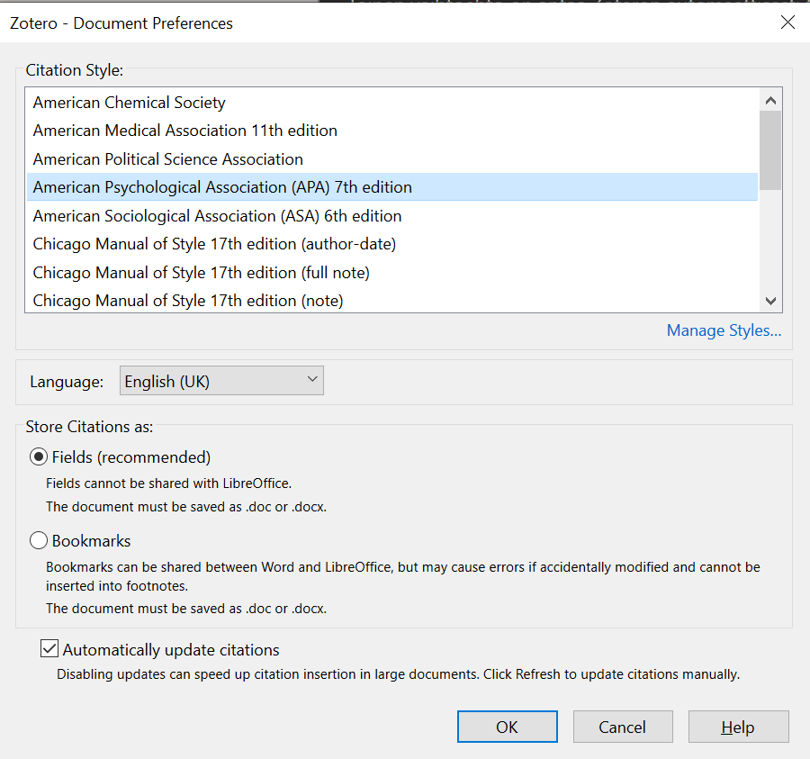
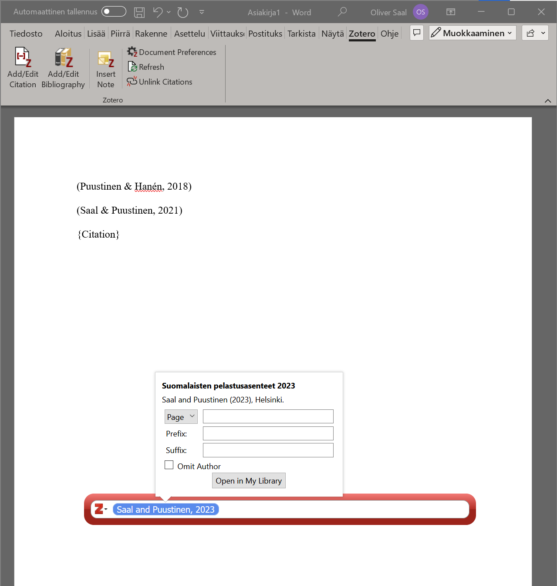

23 Zotero-lähdehallintatyökalu
Zotero on ilmainen lähdehallintatyökalu, jossa voit kerätä kaikki lähdeviittauksesi, organisoida ne haluamasi tavan mukaan, ja generoida lähdeluetteloita esimerkiksi Wordiin.
Zoteron käyttö vaatii rekisteröitymistä, jonka jälkeen saat henkilökohtaisen profiilin, minne tallennat lähdeviittauksesi. Zoterolle löytyy tietokoneohjelma sekä plugin-sovellukset Google Chromeen ja Microsoft Wordiin, joita kannattaa käyttää yhdessä.
23.1 Zoteron tietokonesovelluksen yleiskäyttö
Lataamalla Zoteron ja kirjautumalla sisään sovellukseen Zoteron käyttäjätunnuksellasi pääset Zoteron yleisnäkymään (Kuva 23.1)1.
1 Zoteron voi asentaa suomeksi jos haluaa. Oletan tässä artikkelissa, että olet asentanut sen englanniksi. Kielen voi vaihtaa kohdasta Edit > Preferences > Advanced > General > Miscellaneous > Language.

Ohjelman vasemmalla puolella näet kansiorakenteen. Voit laatia omia kansioita ja alakansioita, ja järjestää kaikki viitteesi niihin. Yksi viite voi olla vain yhdessä kansiossa.
Zoterossa on joitain sisäänrakennettuja erityisiä viitekansioita, jotka täyttyvät automaattisesti tyypin mukaan.
- “My Library”-kansiossa näet kaikki viitteesi kerralla, vaikka ne olisi järjestty muihin kansioihin.
- “My Publications”-kansiossa näet kaikki omat julkaisusi, jos olet lisännyt ne Zoteroon.
- “Duplicate Files”-kansio näyttää kaikki kaksoiskappaleet, jotka Zotero on tunnistanut. Voit yhdistää ne automaattisesti yhdeksi viitteeksi, jolloin Zotero korjaa kaikki tekemäsi viittaukset käytön mukaan.
- “Unfiled Items”-kansio näyttää kaikki viitteet, joita et ole lisännyt kansioihin.
- “Bin”-kansio näyttää poistetut viitteet. Jos poistat viitteen, se siirtyy ensin roskakoriin ennen täydellistä poistoa.
Vasemmanpuolisen laidan ylänurkassa on pikatoiminnot uuden kansion tai kirjaston tekemiseksi. Voit laatia useampia kansioita ja jakaa niitä kanssakirjoittajisi kanssa.
Saman laidan alanurkassa näkyy listaus kaikista avainsanoista, jotka löytyvät viitteistäsi. Jos käytät tätä tehokkaasti, voit helposti hakea viitteitä avainsanoilla.
Ohjelman keskikohdassa näkyy kaikki aktiivisen näkymän viitteet (esim. tietty kansio tai “My Library”). Voit itse valita, millä tavalla järjestät ne, ja mitä metadatatietoja näet tässä näkymässä - kuvassa (Kuva 23.1) minulla on näkyvillä viitteen otsikko, kirjoittajat, vuosi, lisäyspäivämäärä Zoteroon, sekä sivunumerot. Painamalla hiiren oikeaa näppäintä otsikkopalkin päällä voit muokata, mitä näkyy näkymässä.
Ohjelman oikealla puolella näkyy yksittäisen viitteen metadatatiedot. Jokainen viite ottaa “Item Type”-tyypin, joka määrittelee, mitä metadataa viitteelle voi/tulisi lisätä. Esimerkkiviite on tyypiltään “Journal Article”, eli tieteellinen aikakauslehtiartikkeli. Kuvassa näkyy mm. viitteen otsikko, kirjoittajat eriteltynä, abstrakti (pienennettynä, koska se vie suunnattomasti tilaa), julkaisukanava, päivämäärä, julkaisun lyhenne, kieli, DOI- ja ISSN-numerot, ja muita pieniä metadataseikkoja.
Oikealla puolella löytyy myös erinäisiä välilehtiä. “Info”-välilehdellä löydät metadatakirjauksen. “Notes”-välilehdelle voit lisätä vapaasti omia muistiinpanojasi. “Tags”-välilehdellä voit lisätä ja poistaa avainsanoja, joiden avulla voit hakea lähdettä avainsanahaussa vasemmanpuolisen palkin alareunassa. “Related”-välilehdessä voit lisätä muita lähteitä, jotka mielestäsi liittyvät avoimeen lähteeseen.
Ohjelman oikean ja keskikohdan yläpalkissa löytyy pikakomennot lähteiden, muistiinpanojen ja liitteiden lisäämiselle, sekä hakutoiminto ja vientityökalu.
Zoterossa on sisäänrakennettu PDF-lukija. Viitekirjauksella ei tarvitse olla alkuperäistä tekstiä, mutta jos lisäät sellaisen, pääset lukemaan tekstin suoraan Zoterossa kaksoisnapauttamalla lähdettä. Zoteron PDF-lukija on suht alkeellinen, mutta sisältää hyödyllisiä merkintätyökaluja, esim. käsinkirjoitus- ja merkkauskynätyökalu.
23.2 Viitteiden tuonti Zoteroon
Voit tuoda omia viitteitäsi Zoteroon eri tavoin. Yksinkertaisin, mutta myös työläin, on lisätä viite käsin. Painamalla vihreää +-painiketta ohjelman keskikohdan yläpalkissa pääset lisäämään viitteen. Valitse ensin viitteen tyyppi - yleisimmät löytyvät suoraan painikkeen avaamasta listasta, mutta “More”-valinnan alta löytyy listaus kaikista Zoteron tukemista viitetyypeistä.
Yleisimmät viitetyypit, joita kohtaat, ovat:
- “Book”: Kirja, yhden tai useamman kirjailijan kirjoittama. Voi myös olla ns. antologia, jolloin kirjan ovat toimittaneet tietty määrä kirjailijoita, mutta yksittäisten lukujen kirjailijat voivat olla eri. Kirjan kirjoittajien määrittelyssä voit määritellä, onko kyseessä toimittaja (“Editor”) vai kirjailija (“Author”).
- “Journal Article”: Artikkeli tieteellisessä aikakauslehdessä. Näihin tulee kirjata esim. lehden nimi (“Publication”), volyymi ja painos (“Volume” ja “Issue”), artikkelin sivut lehdessä (“Pages”), julkaisuvuosi- tai päivämäärä (“Date”) sekä mielellään uniikki DOI-numero (“DOI”).
- “Report”: Muu julkaistu raportti, esim. viranomaisraportit. Näihin voit kirjata raportin numeron “Report Number”, raporttisarjan nimen “Series Title”, sekä julkaisupaikan ja julkaisijan (“Place” ja “Institution”).
- “Statute”: Lakiteksti, esim. “Laki Pelastusopistosta”. Näihin kannattaa varsinkin kirjata lain virallinen numerointi (“Code Number”) sekä julkaisupäivämäärä (“Date Enacted”).
Toinen vaihtoehto on antaa Zoteron automaattisesti täyttää viitteen metadatatiedot lisäämällä se DOI- tai ISBN-numeron avulla. DOI- ja ISBN-numerot ovat uniikkeja numeroita, joiden avulla voi tunnistaa yksittäisen viitteen. Melkein kaikki journal-artikkelit ja kirjat käyttävät näitä, joten niillä on helppoa lisätä viitteitä automaattisesti. Voit lisätä numeron avulla painamalla ohjelman keskikohdan yläpalkista taikasauvakuvaa.
Zotero täyttää kaikki löytämänsä viitetiedot suoraan metadataselosteeseen, sekä linkittää mahdollisuuksien mukaan suoraan viitteen verkkosivuille tai PDF-tiedostoon (jos sellainen löytyy Zoteron servereiltä). Tarkista kuitenkin aina, että viitteen tiedot ovat oikeellisia ennen sen käyttöä tekstissä!
Kolmas vaihtoehto on pudottaa lataamasi PDF-tiedosto Zoteroon ja antaa ohjelman analysoida tiedoston metadata. Pudota siis PDF-tiedosto ohjelman keskikohtaan (tai valitse File > Import... > A file (BibTeX, RIS, Zotero RDF, etc.)) ja anna ohjelman tehdä taikuutensa. Tarkista kuitenkin viitteen oikeellisuus - tämä prosessi ei aina toimi loistavasti!
Neljäs, ja itse suosimani, vaihtoehto on käyttää Zotero Connector-työkalua Google Chromessa. Työkalulla voit selailla viitteitä verkossa, ja löytäessäsi kiinnostavan viitteen, painat yksinkertaisesti työkalun kuvaketta Chromen yläoikealla (osoitepalkin vieressä), jolloin Connector automaattisesti lisää viitteen ja tarvittavat metadatatiedot suoraan Zoteroon. Kuvakkeen ikoni vaihtuu viitetyypin mukaan, joten voit suoraan nähdä, millaiseksi Zotero mieltää verkkosivuviitteesi. Zotero ymmärtää siis suoraan aikakauslehtiartikkeleiden olevan näitä, vaikka lukisit niitä lehden verkkosivuilla.
23.3 Viitteiden käyttö Wordissa
Asentaessasi Zoteron tietokoneellesi, se myös automaattisesti asentaa plugin-ohjelman Wordiin, jolla voit lisätä viitteitä suoraan tekstiisi2. Plugin-ohjelma löytyy omana välilehtenään Wordista, yleensä välilehtiluettelon lopusta. Jotta voit käyttää toimintoa, sinulla tulee olla Zoteron tietokoneohjelma auki taustalla - muuten viitteiden lisääminen ja muokkaaminen ei toimi!
2 Jos et löydä plugin-ohjelmaa Wordista, tarkista Zoteron tukisivut.
Kun ensimmäisen kerran yrität lisätä viitteen tiedostoon, Zotero pyytää sinua määrittelemään tiedoston viitetyylin sekä kielen (Kuva 23.2). Voit vaihtaa kieliä tiedostojen mukaan, jos kirjoitat useammalla kielellä. Viitetyylinä voit käyttää esim. APA-muotoa (American Psychological Association) tai Chicago-tyyliä, mutta jos olet kirjoittamassa johonkin aikakauslehteen, tarkista heidän sivuilta mitä tyyliä he käyttävät.

Zoteron käyttö Wordissa on hyvin yksinkertaista (Kuva 23.3). Painamalla “Add/Edit Citation” lisäät viittauksen. Jos tekstikursorisi on aikaisemmin lisätyn viittauksen kohdalla, voit muokata viittausta mielesi mukaan. Painamalla “Add/Edit Bibliography” lisäät automaattisesti päivittyvän viiteluettelon valitsemaasi kohtaan. “Document Preferences”-painikkeesta voit muokata tiedoston viittausasetuksia (ks. Kuva 23.2). Jos viittaukset eivät jostain syystä päivity automaattisesti, voit painaa “Refresh”-painiketta.

Kun lisäät viitteen tai muokkaat valmista viitettä, Zotero avaa punaisen viitepalkin. Voit siirtää palkin haluamaasi kohtaan, jotta se ei ole tielläsi. Kirjoittamalla palkkiin haet viitteitä millä tahansa hakumetodilla suoraan Zoterosta. Jokainen lisäämäsi viite näkyy palkissa pienenä soikiona. Klikkaamalla viitettä voit muokata sulkuviitteen muotoilua: voit lisätä tarkan sivunumeroinnin viitteeseen, poistaa kirjailijoiden nimet näkyviltä (jos olet maininnut ne tekstissä), sekä lisätä mitä tahansa tekstiä sulkujen sisälle joko ennen (“Prefix”) tai jälkeen (“Suffix”) viitettä.
Zoteron lisäämiä viitteitä ei tule muokata suoraan tekstissä, vaan aina viitepalkin kautta. Jos haluat poistaa viitteen, voit yksinkertaisesti poistaa sen niin kuin poistaisit tavallista tekstiä. Viiteluettelo päivittyy aina sulkuviitteiden mukaisesti, eli jos poistat viitteen tekstistä, se poistuu myös viiteluettelosta.
Jos huomaat virheellisiä tietoja jossain viitteessä, sinun tulee korjata ne Zoteron tietokoneohjelmassa, ei Wordissa. Joskus Zotero kuitenkin lisää tai poistaa osuuksia viitteestä (esim. listaa jostain syystä kaikki kirjailijoiden nimet sulkuviitteeseen, vaikka näin ei tulisi tehdä). Kokeile ensin sulkea ja avata sekä Word-tiedosto että Zotero uudelleen, painaen myös “Refresh”-nappia. Jos ongelma vielä esiintyy, tarkista Zoterossa, että viitteen tyyppi on oikea (viitemuotoilu määrittyy tyypin mukaan). Jos kumpikaan ei toimi, voit 1) hyväksyä kohtalosi, 2) vaihtaa viitemuotoa, tai 3) manuaalisesti lisätä ongelmalliset viitteet tekstiisi.